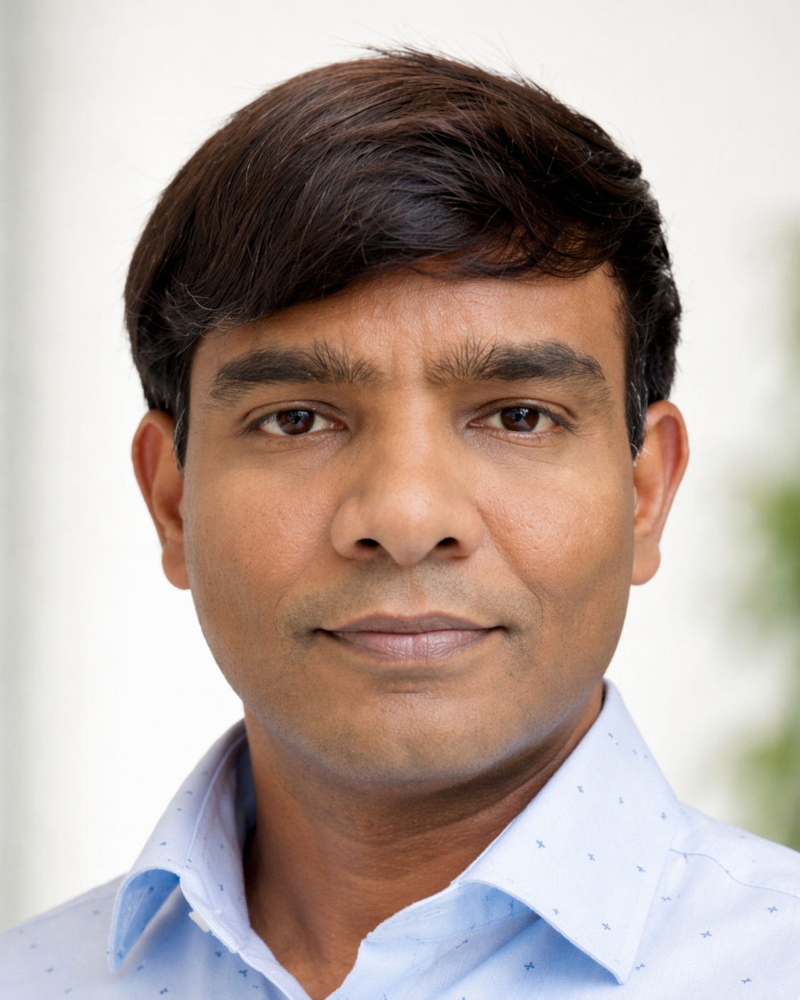

Principal Cloud Architect & SRE Lead
20+ years designing fault-tolerant, highly available architectures across AWS and Azure. Specialising in zero-trust security, SRE adoption, platform modernisation, and cost optimisation for global enterprises.

Principal Cloud Architect
Core Competencies
Professional Experience
Flagship Architecture Projects
Certifications
Education